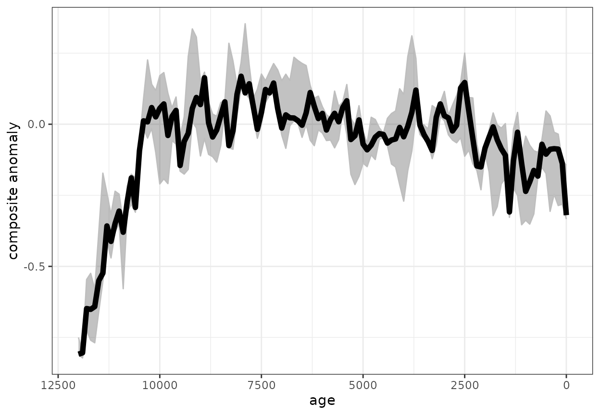

Temp12k-DCC.Rmd
library(compositeR)#devtools::install_github("nickmckay/compositeR")
library(geoChronR) #devtools::install_github("nickmckay/geoChronR")
#> Welcome to geoChronR version 1.1.12!
#>
library(lipdR) #devtools::install_github("nickmckay/lipd-utilities",subdir = "R")
#>
#> Attaching package: 'lipdR'
#> The following objects are masked from 'package:geoChronR':
#>
#> createTSid, pullTsVariable
library(purrr)
library(magrittr)
#>
#> Attaching package: 'magrittr'
#> The following object is masked from 'package:purrr':
#>
#> set_names
library(ggplot2)
library(foreach)
#>
#> Attaching package: 'foreach'
#> The following objects are masked from 'package:purrr':
#>
#> accumulate, when
library(doParallel)
#> Loading required package: iterators
#> Loading required package: parallel
#Data to use
Temp12k <- Temp12k
sg <- pullTsVariable(Temp12k, "climateInterpretation1_seasonalityGeneral")
ic <- pullTsVariable(Temp12k, "paleoData_inCompilation")
u <- pullTsVariable(Temp12k, "paleoData_units")
#TODO this filter isn't quite right. Why aren't seasons standardized (length of fTS should be 782 not 827)
tu <- which(tolower(ic) == "temp12k" & (tolower(sg) != "summer+" & tolower(sg) != "winter+") & tolower(u) == "degc")
fTS <- Temp12k[tu]
if(length(fTS)!=782){print(paste0('WARNING: unexpected number (',length(fTS),') of proxy records filtered. The expected number should be 782 for DCC'))}
#> [1] "WARNING: unexpected number (767) of proxy records filtered. The expected number should be 782 for DCC"
fTS <- fTS[!is.na(lapply(pullTsVariable(fTS,'age'),mean,na.rm=T))]
for (i in 1:length(fTS)){
unc <- as.numeric(fTS[[i]]$paleoData_temperature12kUncertainty)
if (length(unc)==0){unc<-NA}
proxy <- tolower(fTS[[i]]$paleoData_proxy)
archive <- tolower(fTS[[i]]$archiveType)
season <- tolower(fTS[[i]]$climateInterpretation1_seasonalityGeneral)
if (is.na(unc)){
if (grepl('marine',archive) & proxy == "alkenone"){ unc <- 1.7
} else if (grepl('marine',archive) & proxy == "d18o"){unc <- 2.1
} else if (grepl('marine',archive) & proxy == "mg/ca"){ unc <- 1.9
} else if (grepl('marine',archive) & proxy == "foraminifera"){
if (grepl('summer',season)){ unc <- 1.3
}else if (grepl('winter',season)){ unc <- 1.4
}else{ unc <- 1.3}
} else if (grepl('marine',archive) & proxy == "dinocyst"){
if (grepl('summer',season)){ unc <- 1.7
}else if (grepl('winter',season)){ unc <- 1.2
}else{ unc <- 1.2}
} else if (proxy == 'tex86'){ unc <- 2.3
} else if (proxy == 'diatom'){ unc <- 1.1
} else if (proxy == 'radiolaria'){ unc <- 1.2
} else if (proxy == 'pollen'){
if (grepl('summer',season)){ unc <- 2.0
}else if (grepl('winter',season)){ unc <- 3.0
}else{ unc <- 2.1}
} else if (proxy == 'gdgt'){ unc <- 2.9
} else if (proxy == 'chironomid'){ unc <- 1.4
} else{ unc <- 2.7 #default
}
fTS[[i]]$paleoData_temperature12kUncertainty <- unc
}
}
#bin vectors for the composite output
binvec <- seq(-50, to = 12050, by = 100)
binAges <- rowMeans(cbind(binvec[-1],binvec[-length(binvec)]))Text from Kaufman et al. (2020):
“This procedure is similar to the SCC except, instead of using a single time window to align the records, this method applies a dynamic record-aligning procedure and it uses different approaches to characterizing the uncertainties.
The mean temperatures of each record were adjusted iteratively to optimally minimize the mean offset between each record and all other records within each latitudinal band over the past 12,000 years. This allowed time series with minimal or no overlap to be included in the composite, so all of the calibrated records in the database were used.
No spatial gridding was applied, but the records were averaged within latitudinal bands.
For this method, errors in the proxy temperatures were either drawn from the posterior outputs of Bayesian temperature calibrations, where available in the database (n = 149, ref. 5), or simulated from the uncertainties summarized for each proxy type. For the simulation, the uncertainties were assumed to be auto-correlated, with an AR1 coefficient of 0.71, such that 50% of the variance in the uncertainties is auto-correlated. This model reflects the contribution of correlated bias, as well as uncorrelated uncertainties. Age uncertainties were simulated using the Banded Age Model (BAM)27, with a Poisson model and symmetric 5% over- and under-counting probabilities. Although BAM is designed for layer-counted age modelling, it produces reasonable first-order estimates of age uncertainty, and only requires the original ages as input. To demonstrate this, we compared the BAM-based ensembles produced here to 108 proxy datasets with age models produced by Bacon28. The root mean square error (RMSE) of the ensemble members was calculated relative to the median of each age ensemble over the past 12,000 years. The Bacon models had a median (mean) RMSE of 198 (216) years, whereas the BAM models produced here had a median (mean) RMSE of 251 (260) years. We find that BAM produces age ensembles with uncertainty ranges that are comparable to, but slightly larger than Bacon for these datasets. Although BAM does not accurately represent the full uncertainty structure, it ultimately produces similar, and slightly more conservative, results. Before compositing, DCC randomly selected separate temperature and age ensemble members, thereby effectively propagating these uncertainties through the subsequent compositing steps.”
#Defaults: duration = 3000, searchRange = c(0,7000), gaussianizeInput = FALSE, normalizeVariance = FALSE,
# stanFun = standardizeMeanIteratively
# binFun = sampleEnsembleThenBinTs
fTS_marine <- fTS[pullTsVariable(fTS,'archiveType')=='MarineSediment']
nens <- 3
ensOut <- foreach(i = 1:nens) %dopar% {
return(ts)
}
groupVar <- 'paleoData_proxyGeneral'
ensOut <- foreach(i = 1:nens) %dopar% {
out <- vector(mode='list')
for (group in unique(pullTsVariable(fTS_marine,groupVar))){
fi <- which(pullTsVariable(fTS_marine,groupVar)==group)
out[[group]] <- compositeEnsembles(fTS_marine[fi], binvec, duration = 3000, searchRange = c(0,7000), stanFun = standardizeMeanIteratively, uncVar = 'paleoData_temperature12kUncertainty')
#out[[group]] <- compositeDCC(fTS_marine[fi], binvec, uncVar = 'paleoData_temperature12kUncertainty')
}
return(out)
}
reformatCompositeOut <- function(ensOut,X,groupVar,weights=NA){
if (is.na(weights)){
w<-rep(1,length(groupVar))
} else{w<-weights}
#
reformatComposite <- vector(mode = 'list')
for (group in names(ensOut[[1]])){
compMat <- map_dfc(lapply(ensOut, function(sublist) sublist[[group]]), extract2, 'composite')
countMat <- map_dfc(lapply(ensOut, function(sublist) sublist[[group]]), extract2, 'timeCount')
countMat[is.na(countMat)] <- 0
reformatComposite[[group]] <- as.data.frame(cbind(age=X,count=apply(countMat,1,median),compMat))
}
reformatComposite[['average']] <- reformatComposite[[group]]*NA
reformatComposite[['average']]$age <- apply(sapply(reformatComposite, function(df) df$age),1,mean,na.rm=T)
reformatComposite[['average']]$count <- apply(sapply(reformatComposite, function(df) df$count),1,sum,na.rm=T)
for (c in colnames(reformatComposite[['average']])[-c(1,2)]){
reformatComposite[['average']][[c]] <- apply(sapply(reformatComposite, function(df) df[[c]]),1,mean,na.rm=T)
}
return(reformatComposite)
}
compDf <- reformatCompositeOut(ensOut,binAges,groupVar)
q = 0
plt <- ggplot() +
geom_ribbon(aes(x=compDf$average$age,
ymin=apply(compDf$average[-c(1,2)],1,quantile,q),
ymax=apply(compDf$average[-c(1,2)],1,quantile,1-q)),
alpha=0.3,color='grey')+
geom_line(aes(x=compDf$average$age,y=apply(compDf$average[-c(1,2)],1,median)),color='black',size=2)+
scale_x_reverse(limits=rev(range(binvec)))+
labs(x='age',y='composite anomaly')+
theme_bw()
print(plt)
#dim(x_lists)